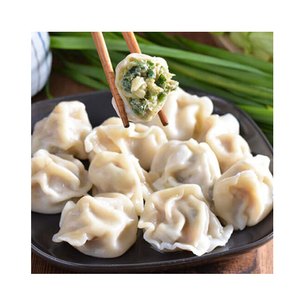

Recipes Page
Chinese Hot and Sour Soup
Origin: China Source: tofu, mushrooms, and bamboo shoots Category: Soup
Chinese Hot and Sour Soup (酸辣汤) is a popular and flavorful soup known for its spicy and tangy taste. It's made with a variety of ingredients including tofu, mushrooms, and bamboo shoots.
Recipe Ingredients
- Tofu
- mushrooms
- water
- pork
- bamboo shoots
- soy sauce
Recipe Steps
- Boil
- Simmer
- Add the melted chocolate
- Cooking
- dipping sauces
Additional Food images


Chinese Jiaozi
Origin: China Source: Flour, pork and cabbage Category: Main Dish

Chinese dumplings (Jiaozi, 饺子) are stuffed parcels made of unleavened dough and savoury fillings consisting of minced ingredients like meat, egg, tofu, or vegetables. They can be boiled, pan-fried or steamed.
Recipe Ingredients
- Flour
- Water
- Pork
- Cabbage
Recipe Steps
- Dough
- Filling
- Folding
- Cooking
- Dipping Sauces
Additional Food images


Chicken Curry
Origin: Japan Source: Family Recipe Category: Main Dish
Unlike Indian or Thai curry, Japanese curry is more savory than spicy. It’s an exemplary comfort food and one of the most-loved home-cooked dishes in Japan.
Recipe Ingredients
- skinless, boneless chicken breast
- 1 tablespoon olive oil
- 1 pinch salt and ground black pepper
- water
- 1 package curry sauce mix
- 1 can peas
- 5 new potatoes, halved
- 1 package sliced cremini mushrooms
- 2 medium carrots, chopped
- 1 medium onion, chopped
- 2 cups jasmine rice
Recipe Steps
- Place chicken in a large, deep skillet. Drizzle with olive oil and season with salt and pepper on both sides. Add 1/3 cup water to the pan, cover, and cook over medium heat until no longer pink in the center and the juices run clear, about 20 minutes.
- While chicken is cooking, pour 2 cups water into a microwave-safe bowl. Break curry sauce mix into pieces and add to water. Heat in the microwave on high for 3 1/2 minutes; remove and stir until sauce mix has completely dissolved.
- Remove chicken from the skillet. Cut into cubes, return to the skillet, and pour curry sauce over top. Stir in peas, potatoes, mushrooms, carrots, and onion. Bring to a boil, then lower heat and simmer until vegetables are tender, about 30 minutes.
- Meanwhile, bring remaining water and rice to a boil in a saucepan. Reduce heat to medium-low, cover, and simmer until rice is tender and water has been absorbed, 20 to 25 minutes.
- Scoop rice into bowls and serve curry on top.